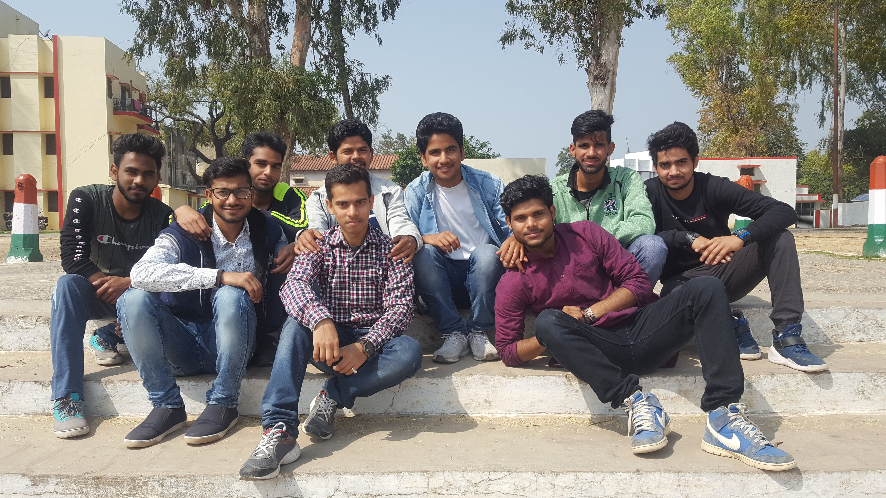
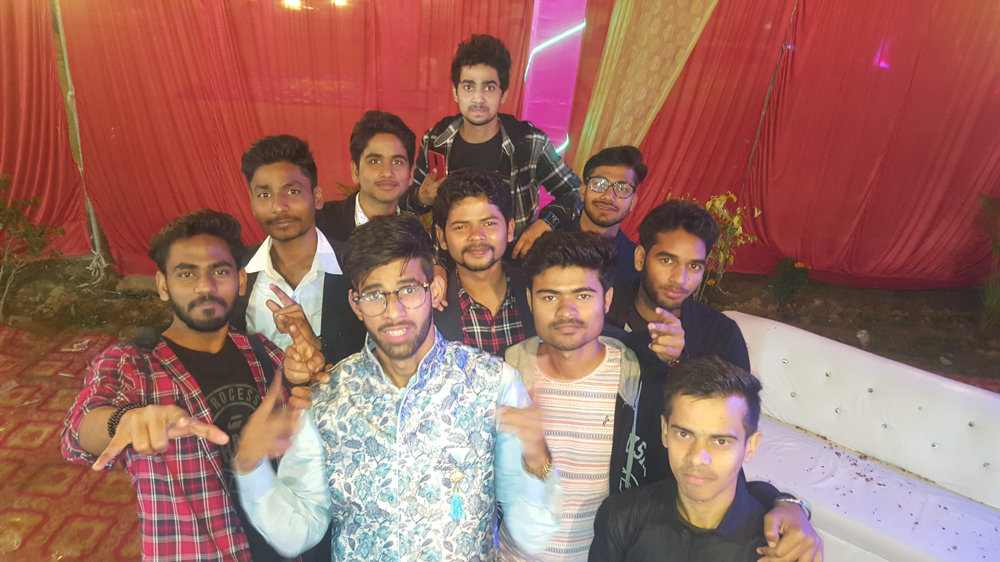
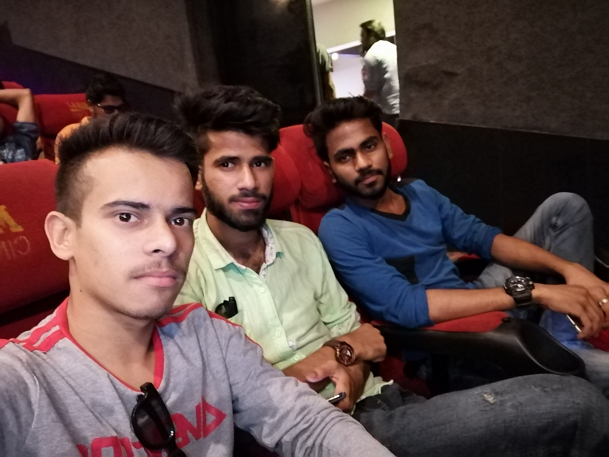
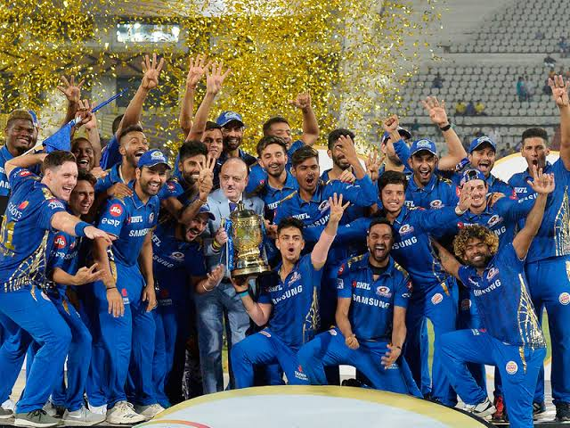

I came back to college for 4th semester registration. I submitted the documents to the HOD’s office and met my friends. I had some work left at home so I returned to home next day. I came back there on 31st January. There were 6 theory subjects in this semester also. The subjects are – “Material Science, Environment & Ecology, Microprocessors & Microcontrollers, Electromagnetic Field Theory, Electronic Measurement & Instrumentation, and Data Structure & Algorithms”. Naveen Tiwari sir is teaching us the Data Structure; he is a teacher of CSE department. He is very hard working. I heard from seniors that Microprocessor subject is the most difficult subject of the electronics branch. I decided to join NPTEL lectures. Our Microprocessor’s teacher is Amit Singh Chauhan sir. He is teaching us EDC (Electronic devices & circuits) in last semester. But we are not happy with his teaching, because we can’t understand what he is teaching and also He only do numerical problems and don’t do theories more. So we were unhappy with him.
04 Feb 2019, Monday
Our classes had started properly from that day. First day there was class was of EMI (Archana Verma Ma’am) then EMFT (Ashwini Sir) and Microprocessor & Microcontroller (Amit Sir). Our classes are going in room no 406. That class was for civil in last semester. That class size is smaller than other rooms; it is allotted to us due to less number of students in our branch. Prateek was packing his bags to go home because there is his sister’s marriage in upcoming days. He invited me and some other friends to come in marriage ceremony. His sister’s marriage is on 19th February, I will go with Satyam, Shiv Shakti and others.
10 Feb 2019, Sunday
It is the day when I have started writing this autobiography. It is Sunday today, and I was lying on bed and reading an article on ‘Anne Frank’ on internet. I had read her novel in class 10th named “The Diary of a Young Girl”. She was a Jewish teenager born in Frankfurt, Germany in 1929. She documented her life in her diary while hiding from Adolf Hitler and his Nazi army from 1942 to 1944. She was killed in concentration camp in March 1945. Her father Otto Frank had published her diary in 1947. I was very impressed with her and decided to write this autobiography. I wanted to share my college experience, problems, happiness and every major incident happened with me in my college in short.
Till now I was writing about my past or the things happened with me in the previous times. From now I will write about my present 📝. I am not using pen and paper for writing; I am writing this at ‘Microsoft Word pad’. I pledge that i will mention only right incidents not any rumour or wrong things.
11-16 Feb 2019
There is a Faculty Development Programme held in our college on the topic of "HFSS & OrCAD". Our HOD Arun Singh sir has permitted the students to take part in it. HFSS is the software for Antenna design & the OrCAD is a software for the realisation and printing of electronic circuits on PCB. Second year students are allowed only for OrCAD, which is in first three days. HFSS is out of our understanding so we are not invited for the next days. We are learning a lot of things about OrCAD in the programme. We have to work on OrCAD in this semester in lab. We are also provided the free version of the OrCAD capture CIS and other software in our laptops to practice at home.
18 Feb 2019, Monday

Tomorrow is Prateek’s Sister’s marriage so we are getting ready to go Azamgarh. I make phone call to everyone who is interested to go. Prateek also invited Saurabh but he isn’t ready to go there because his roommates are not going. Including me, 9 persons are going. They are I, Satyam Singh, Shiv Shakti Rai, Arshad Hussain, Sujeet Kumar, Vivekanand, Neeraj Singh, Satya Prakash & Siddhant Sagar. We take the same train Utsarg Express to go there. Train was so much crowded, we were in general coach. We didn’t sleep in the train we were chatting whole night about nerdy and imaginary things. The whole passengers were angry on us because we were making noise and didn’t let them sleep. The train reached Azamgarh at 4:00 am. Prateek’s dad was waiting for us at railway station, he picked us from there and drop at the hotel. We were stayed at a hotel near bus stand.
19 Feb 2019, Tuesday

I bathed and made me fresh early in the morning. Some of the friends were feeling sleepy so they slept. I, Satya, Satyam, Shiv Shakti & Siddhant went outside for a walk. Satya had to withdraw some cash from ATM; we went to an ATM machine. There was a switch inside ATM room, Siddhant pressed it. It was Siren which was started ringing; we left the ATM as soon as possible and ran away.
In the noon, Prateek came to meet us. He brought us to his home, shows us his play ground and other spots. After then we reach to the marriage hall. After getting ready Prateek introduced us to his family. In the evening, we ate different dishes, saw Jai-Mala and did dance together. Siddhant sang ‘Kabira’ song during Jai-Mala. During night we went to marriage place to see marriage. Everyone from my friend including Prateek slept there. Only I and Arshad were awake, we saw the whole marriage ceremony till morning. We have enjoyed very much. On next day means on 20th February in the afternoon, they took train to Kanpur and I took bus to home. My home is near from there so I went home because there is also my brother’s birthday on 21st February 🎂.
26 Feb 2019, Tuesday
The day before yesterday, I came from home. Few days before, a horrible incident happened in our country. On 14 February 2019, a convoy of vehicles carrying security personnel on the Jammu Srinagar National Highway was attacked by a vehicle-borne suicide bomber at Pulwama district in Jammu and Kashmir. The attack resulted in the death of 40 CRPF Soldiers and the attacker. The attack was done by Pakistani terrorists.
Yesterday, I was playing PUBG in the evening. I got a teammate who was from Pakistan, we were talking in game. Then we started talking about Pulwama attack and he was taking his country’s side. I killed him from grenade in anger. And a coincidence happened today Indian Government conducted an Air Strike on Pakistan at Balakot early in the morning and killed many terrorists.
14 Mar 2019, Thursday
My mobile’s battery is getting weak. It is discharging quickly within a few hours. My mom forced me to buy a new phone for myself. I searched for a few days and select ‘Huawei Honor 8X’ phone. It was launched last year in November and was awarded for ‘Midrange Phone of the Year’. I showed it to my parents and they told that you can buy it. I bought the phone from Amazon, and make it deliver at my home in Ballia, Which is about to deliver on 17th of March.
Our first class tests of this semester are going on and microprocessor is tough for me so I crammed it. CT1 will be end on 17th March. After that I will go home for Holi Festival. And also I am excited for my new mobile phone. Prateek and I are going home together. He had booked our train ticket with help of his dad.
28 Mar 2019, Thursday
Today after lunch break, our HOD sir Dr. Arun Kumar Singh sir came in our class and told us about the IEEE (Institute of Electrical and Electronics Engineers). The IEEE is a professional association that develops, defines, and reviews electronics and computer science standards. At the end he asked us whether we are interested in taking membership or not. I wanted to take membership so I raise my hand. The IEEE membership is of about ₹1,000 ($14). I contacted our CR Umar Singh and submit the fee and then I joined the IEEE.
30 Mar 2019, Saturday
Today, I was completing my Electronic Measurement & Instrumentation lab work file. Archana Ma’am teaches us the subject and also the lab. She had told us to complete it by next lab. I was writing it at word pad when it was completed I closed the word pad window without saving the file. I clicked on don’t save option while closing. So whole work lost and I had to re-write and do about two hour hard work again to complete the file.
01 Apr 2019, Monday
Today, our third semester results have been declared. It was declared on 5th March but like last year our institute had not submitted the fee to university so it was pending. An Unexpected thing shown in my result, I have not got passing mark in a subject. I have backlog in ‘Universal Human Values & Professional Ethics’. I was so much upset and angry on AKTU. I answered about 60/70 mark answer in the exam. I had never failed in any exam in my entire life before today. I talked to parents about backlog, they told me that don’t worry about that, and it is any fault of copy examiners. I wanted to recheck my copy. But our result has declared late so online evaluation portal was closed. I cannot apply for recheck. Later I talked to my friends; some of them also have back in same subject. I didn’t take dinner and trying to sleep but cannot.
06 Apr 2019, Saturday
It is Saturday, our college is off today. I have been tensioned since last five days about my backlog. I and my friends decided to go to Lucknow at AKTU office with the application for rechecking of our exam copy. We catch the bus to Lucknow and reach to AKTU main office. We met there a Sir who told us to submit the fee and fill a form. I submitted ₹5,000 and did as he told. The AKTU office building is very big and very beautiful in architecture. After that we went to a restaurant and took some lunch. Then from a bus via Agra-Lucknow Expressway we reached our room. I was feeling some relaxed from that tension which was eating me since our result declared.
24 Apr 2019, Wednesday
Our second class tests for this semester have started today and will last till three days. There were two exams today. In the morning there was test of Sociology and in afternoon there was exam of Data Structure & Algorithms. And there was also my NPTEL exam of Microprocessor & Microcontroller today. Which have exam centre at Kanpur. I decided to leave the NPTEL exam because if I will go for exam I can miss my whole class test. So I decided to sacrifice my NPTEL certificate.
26 Apr 2019, Friday

Our CT2 ended today. It is the day for which we had been planning since last year. ‘Avengers: End Game’ is releasing today. I have mentioned before (29 April 2018) that I am a huge fan of Marvel. So how can I miss the biggest movie of Marvel? Saurabh Kushwaha booked tickets for us. Our show was from 11:00 pm in midnight. I already took permission from my parents to go for movie.
After giving exam, we rapidly reached at our room and get ready to go for movie. We went at railway station and I saw that about 25 of my colleagues (including Arshad, Prince, Tahsin, Saurabh, Aditya, Vishal, Siddhant, Anoop & many more) were there to go Kanpur for the End Game movie. We enjoyed the movie very much. It was a very fantastic movie. I can’t explain how amazing the movie is. The movie ended at 03:00 AM in the morning and we were walking on the silent roads while talking about the movie. After that we waited for bus till morning and reached at our room. And also today is Sunday so we have not to worry to go college so I am going to sleep now.
30 Apr 2019, Tuesday
It was very hot day today. Today’s highest temperature was 41°C. So Prateek and I decided to buy an Air Cooler for our room because the fan alone is not much efficient in this summer days. We went to an electricity shop and choose a small size cooler. He told us that it is of ₹4,500. We started bargaining, he lowers the price and gave us for ₹4,000. Cooler is necessary because the temperature is getting hotter and hotter day by day.
12 May 2019, Sunday

Today was the final of IPL-2019. It was between two biggest rivals Mumbai Indians & Chennai Super Kings. Mumbai Indians is my favourite team from the beginning of IPL because of Sachin Tendulkar❤️. My most of the friends also support MI but My brother and my roommate like CSK. Our semester exams are going on but we decided to watch full match. Mumbai beats Chennai three times in a row in this season and this was 4th match between them.
MI won the toss and opted to bat first. The opening of Mumbai was not good; they lost their two wickets on 45 runs [Rohit Sharma (15) and Quinton de Kock (29)]. Middle order also did not do well but in the last few overs Kiron Pollard (41) made some runs. The MI scored only 149-8 in 20 overs.
CSK had to make 150 in 20 overs which were not too much for them at the batting pitch of Hyderabad. They had a good start; they continued to score runs and their wicket also fell. Prateek was also watching match with me. Whenever CSK batsman scored 4s or 6s, Prateek used to tease me, make some weird sounds and say that MI will lose today. It was 12.4 over and Shane Watson hit the ball and MS Dhoni tried to take two runs but Ishan Kishan hit the bull’s eye and ignited the stumps. MS Dhoni was given run out given by third Umpire. Shane Watson hit 80 runs and got out in 19th over by Jasprit Bumrah. In the last over, CSK had to score only 9 runs, Lasith Malinga was bowling. He gave only 7 runs and took a wicket. Mumbai Indians won their 4th IPL trophy by 1 run 😍. Now it was my turn to revenge with Prateek. I with other friends sledged and teased him until my soul find peace.
09-21 May 2019
Our semester exam has started on 9th May and the first exam was of ‘Electromagnetic Field Theory’. I was very afraid of getting low marks in ‘Microprocessor & Microcontroller’ and it was due to last semester’s backlog in ‘Universal Human Values and professional ethics’. On Microprocessor exam day, I was so tensioned but when I saw question paper I felt relaxed, it was not much tough as I imagined. All other exams were also not too difficult and wended successfully.
22 May 2019, Wednesday
Our exams have ended and I was enjoying it by playing PUBG mobile game with my squad. Today I have got 6 hours playing warning from PUBG, I had never played it so long before today. I used to play PUBG only 1 to 1½ hours in a day but not every day. I have nothing to do today so I was playing from noon till dinner time. My squad members are Prateek and a Prateek’s friend from Lucknow (Saurabh Dwivedi). We always jump at hotspot and secure kills. If we could survived there then surely there get a Chicken Dinner 🍗.
02 Jun 2019, Sunday
Today is my train to home. Our practical exams ended yesterday. I am going home alone, Prateek had already gone. Whenever my exam ended before his, I always wait for him to go home together. But this time his exam ended before mine exam and he had gone home without waiting for me. He betrayed me.
I have completed a halfway of my engineering degree course now; I successfully spent two years in my college. Now I will wait for my fourth semester result and call from college for fifth semester registration. Till then I will enjoy summer vacation very much at my home.